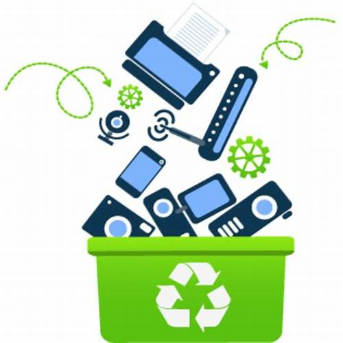

En la actualidad, el avance tecnológico ha generado un crecimiento acelerado en la producción y el consumo de dispositivos electrónicos. Como consecuencia, también ha aumentado la cantidad de residuos electrónicos, conocidos como basura electrónica o e-waste, los cuales representan un grave problema ambiental y de salud pública si no se manejan adecuadamente.
Este proyecto tiene como propósito informar a los usuarios sobre la problemática de la basura electrónica, presentando ejemplos comunes, así como sus causas y el impacto que genera en el medio ambiente. Asimismo, se ofrecerá contenido visual con recomendaciones sobre cómo reciclar adecuadamente estos residuos o darles un nuevo uso. La plataforma también permitirá la interacción mediante diversos juegos didácticos, diseñados para reforzar los conocimientos adquiridos.
A través de esta iniciativa, se pretende contribuir a la difusión de información clave para reducir el impacto negativo de la basura electrónica en nuestro entorno.

¡¡¡COMIENZAAA A DIVERTIRTEEE!!!